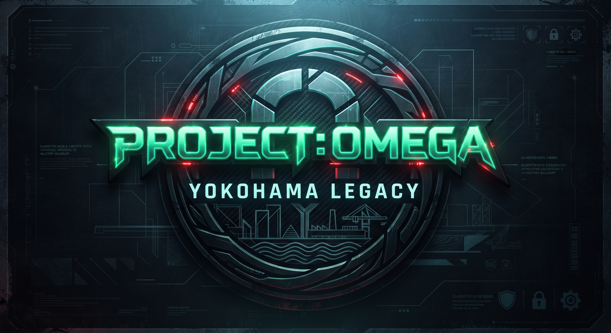

【エージェントへの指令とお願い】
・制限時間：なし（マイペースに探索をお楽しみください）
・周囲の安全に注意し、歩きスマホは絶対におやめください。
・歩道や公共のルールを厳守し、絶対に走らないこと。
現在地: 取得中...
ターゲットとの距離: 待機中...
📡 敵の無線通信を傍受・解析せよ。
手元のパンフレットとアプリ内データベースを駆使し、謎を解き明かせ。
【問題】
手記に記された「配属の季節」と、調査ブラウザに眠る研究所の「創立の時」を突き合わせよ。真の経過年数を算出し、認証キー（半角数字）を入力せよ。
ヒント: 調査ブラウザで「横浜船舶技術研究所」の設立データを検索せよ。
【問題】
手記の指示通りにシャフトの後ろを探しても何も見つからない。物事の裏側を見通すため、該当ページに隠された真の英単語（半角小文字）を暴け。
【問題】
パンフレットP05の航海日誌に記された数式パズルを解き、導き出された「数字（半角数字）」を入力せよ。その数字が、フットスタンプ上で向くべき方向の決定打となる。
【問題】
※現地に行く必要はありません。調査ブラウザに眠る「セキュリティ監査ログ」と、パンフレットP06の割り当て表をOSINT（情報戦）で照合し、なりすまし端末のコードネーム（英語小文字）を暴け。
【問題】
すべての情報を統合せよ。かつての巨大ドックが眠るこの地で、スパイが狙う中枢データの解読キーは？
組織が管理する極秘データベース。キーワードを入力してアーカイブを調査せよ。
司令部（HQ）から受信したすべての暗号無線記録。
全ステージのミッションを完全に突破し、国家の危機を救い出しました！
エージェント、見事な任務遂行です。